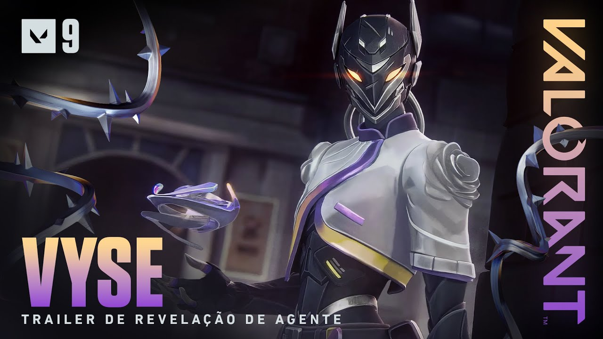
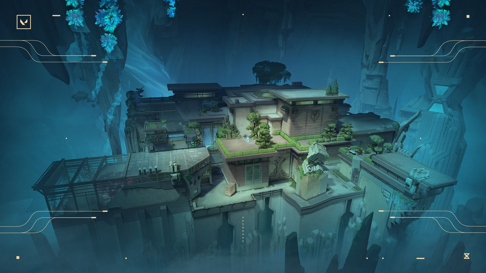
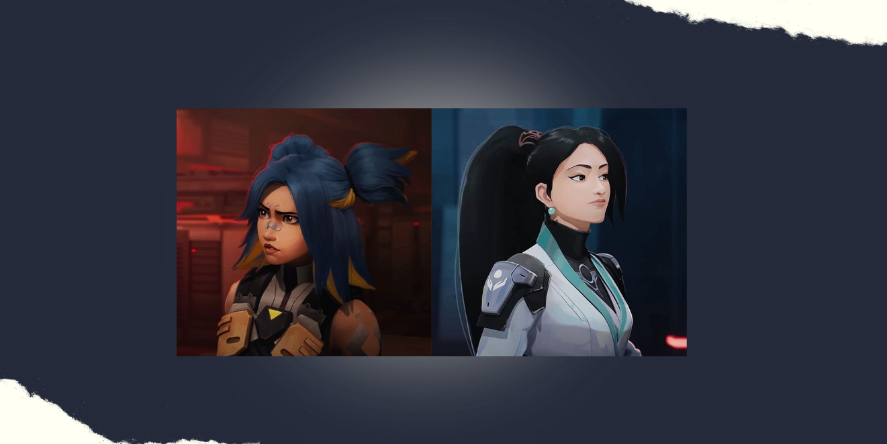

INFO VALORANT

Acompanhe as últimas notícias e atualizações do jogo!
Prepare-se para conhecer Vyse, a nova Sentinela que vai mudar o jogo, que foi anunciada no último episódio(9) do Ato II! Com habilidades incríveis como “Rede de Vigilância” e “Controle Total”, Vyse promete trazer uma nova dinâmica para as partidas.
Além da Vyse, a Riot anunciou a chegada do novo mapa no game, o "Abyss", um mapa com as mesmas funcionalidades do antigo, mas com um design diferenciado e desafiando mais a cautela dos players em relação as quedas letais!
Com a nova atualização 9.01, os problemas relacionados às habilidades da Neon e da Sage foram corrigidos de forma eficiente.
O mapa Abyss foi ajustado e contou com melhorias na visibilidade de áreas submersas e no balanceamento dos pontos de controle. Preparem-se para uma experiência de jogo ainda melhor!
A mecânica de jogo e os sistemas sociais foram aprimorados e agora oferecem fluidez e interação maiores aos players.
Com a última atualização, os jogadores que preferem jogar no console poderão usufruir do jogo também, já que o Valorant agora é compatível com consoles, como PlayStation 5 e Xbox Series. Além disso, as novas configurações permitem que você personalize a experiência em seu console.